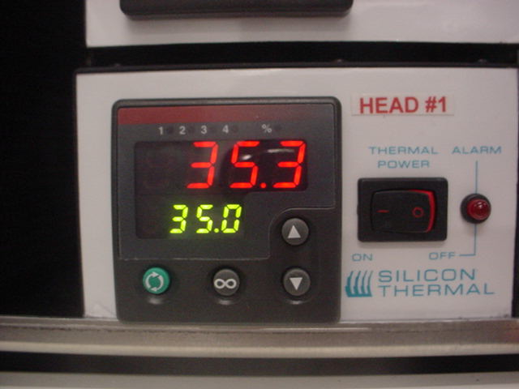
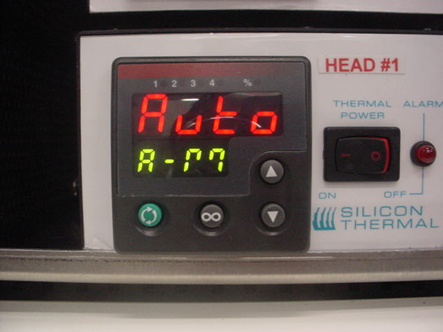
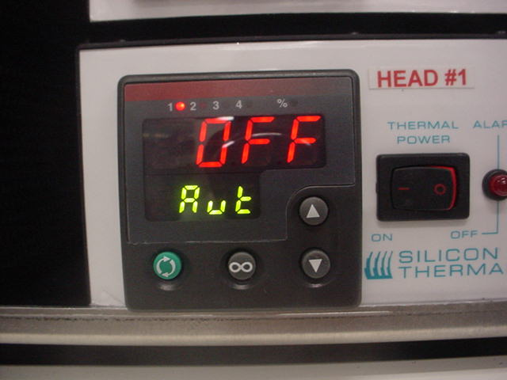
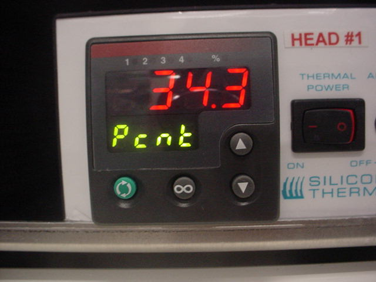
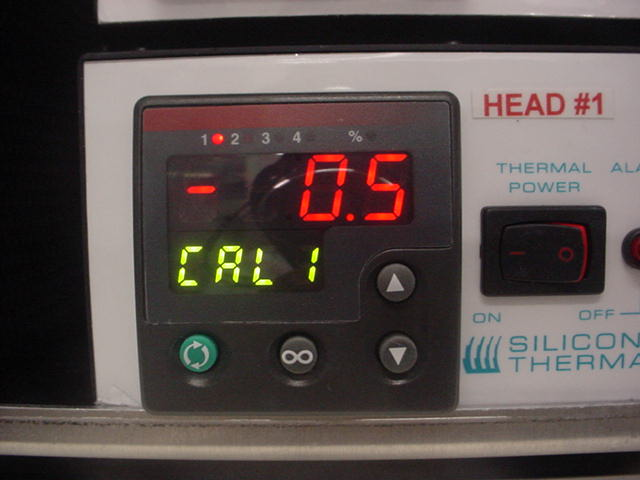
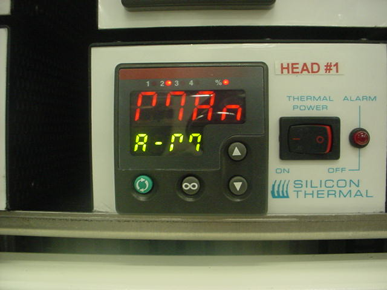

Service History
Subject: ATC installation into NS301
Handler Model: NS-3000(S/N: 151024, Mfg: Nov 2006)
Controller: RC520
Date: 27 Oct 2009
Symptom
ATC installation into NS-3000(S/N: 151024, Mfg: Nov 2006) NS301.
RC520(S/N: 01-20472, Mfg Dec 2005).
Action
27 Oct 2009
1) Drill 2 holes to secure support bar onto Index Arm 2 bracket.
2) Soldering of temp ready wires(RED, GREY) onto DIO3 connector.
28 Oct 2009
1) Remove existing ION and KASUGA ionizers.
2) Installed Contec COM-4(LPCI)H Communication card (for communication with temperature controllers) into RC520.
3) Installed DIO connector and connected com cables to Communication Card.
REMARKS: Initially, NS301 does not have Contec PIO-64L card in RC520 which is to control 7 segment LED panel on NS3000, this handler does not have 7 segment LED panel for binning display.
NS302 & NS303 have 7 segment LED panels installed.
On 20 Apr 2010, NS301 was installed with Contec PIO-64L card in RC520 to output display bining on 7 segment LED panel on NS301
-------------------------------------------------------------------
24 Jun 2010
-Checking Windows 2000 Input & Output address of [Multifunction adapters] for CONTEC Co., Ltd-PO-64L(PCI) on LED display, Resources address is "EC00H"
-Set SPEL Output Address of 7segment LED to "EC00H" which is same as Windows 2000 Resources address, restart NS301 and LED display able to function according to Bin setting
---------------------------------------------------------------------
29 Oct 2009
1) Installed Thermal Head 1&2(Arm1), 5 & 6(Arm2) onto Index Arm. Manually check index arms motion with cables to prevent rubbing to ATC cables and tubings.
2) Installed Manifold tubing(Supply, Return).
3) Installed Contec COM-4(LPCI)H driver for Communication Card in PCI slot.
30 Oct 2009
1) Installed temperature controllers for Thermal Heads.
(Power supply for temperature controllers is 240V).
2) Installed Chiller(Input voltage 110V).
3) Installed MMI A9.11-AMD software with ATC option and installed SPEL CT 2.81b.
4) Encountered PC hang when execution of SPEL CT.
5) Seeking Suzuki advises.
Troubleshooting for NS303 that have ATC Head5 temperature cannot go up. Found setting in temperature controller not in AUTO mode.
2 Nov 2009
ATC MMI A9.11-AMD, SPEL CT 2.81b
Using 2nd IFUNT100 address E800h as reference in [Device Manager].
Launch HWConfe.exe to change SPEL Input / Output I/O Board for IFUNT100A, IFUNT100A-2.
Auto launch of MMI must be disable by mean of remove MMI autostart up first.
Only after MMI auto startup short cut is remove, then use HWConfe.exe
Change SPEL I/O Board Input address as:
E800h for IFUN100A
E807h for IFUNT100A-2
SPEL I/O Output address as:
E804h for IFUN100A
SPEL/MMI startup caused hang up of software solved after correct SPEL I/O address for IFUNT100A.
Alignment for BGA631 RV170 (23x23) for Auto1.
3 Nov 2009
Temperature controller error for Head #5, temperature unable to reach set point of 35DegC(SPEL CT I/O Input Bit 41 (for Arm 2 Head #5 turned off).
Found red wire soldered to peltier Head #5 broken, resolder red wire back to peltier Head #5.
Alignment for BGA631 RV170 (23x23) for Auto2, Auto3, Fix1~4.
Cause
SPEL/MMI startup caused hang up of software due to wrong SPEL I/O address for IFUNT100A.
Because when Contec COM-4(LPCI)H Communication Card which is using PCI, it caused the existing IFUNT100A (also PCI) to auto change address in Windows 2000.
Remarks
Below are the correct settings for temperature controller for AUTO mode
|
 |
 |
 |
|
 |
 |
 |